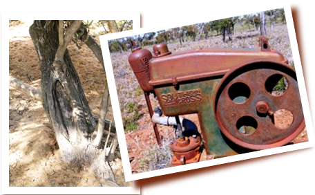

Archaeology KWP (AKWP) aims to provide clients with professional advice, high quality service and a costeffective pricing structure. AKWP provide advice on a range of cultural heritage management services both Historical and Indigenous.
We are committed to developing excellent working relationships with our clients, along with all relevant stakeholders. We work with Government, Industry and Indigenous communities alike to ensure best practice cultural heritage management solutions.
Our values are based on the acknowledgement that Cultural Heritage is unique and irreplaceable, both tangible and intangible, and that all sections of the community place value and respect on their heritage in many diferent ways.
